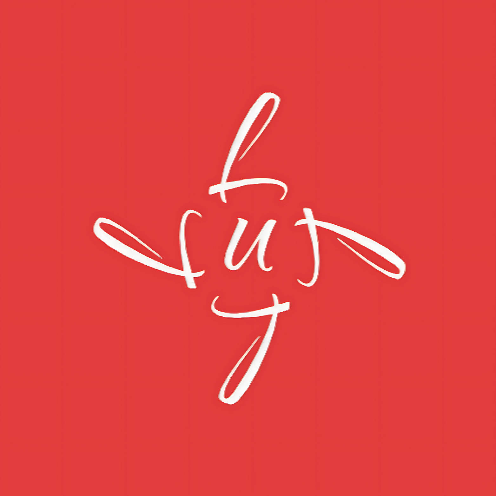

Generative Music Machine
Tropus
Knowledge-grounded musical composition through conversation. Describe what you want, receive a fully rendered original piece in approximately 30 seconds. A structured musical knowledge system and a computational composition engine, integrated in a single interface.
WAV
Rendered Audio Output
Dual
Knowledge + Generation
Headless
Server-Side Rendering
The Problem
Creative professionals need original music for games, media, content, and prototypes. Stock music is generic and over-licensed. Commissioning a composer costs hundreds to thousands per track and takes days. Generative tools that produce MIDI sequences or text descriptions of chords leave the user to do the actual production work. There is no service that takes a plain-language description and delivers a finished, rendered piece of music.
How It Works
01
Describe
Tell Tropus what you want in plain language: mood, genre, tempo, instrumentation. Or ask a question about music theory.
02
Compose
The system generates a structured composition: drums, bass, melody, chords, effects, and musical form. Rendered entirely on the server.
03
Deliver
A 60-second original piece, fully rendered as a playable WAV file in ~30 seconds. No post-production, no plugins, no client-side dependencies.
What Sets It Apart
- 01Rendered audio, not instructions. The output is a finished WAV file containing a structured, multi-layer composition. Not MIDI, not chord charts, not a text description of what the music could sound like.
- 02Knowledge-grounded composition. Generation is informed by the Tractatus de Musica, a formally structured corpus of musical knowledge: definitions, axioms, propositions, demonstrations. This is not generic pattern matching from training data.
- 03Integrated knowledge system. Users can query the same corpus directly for music theory, harmony, and composition. "What is a Phrygian mode?" and "Compose something in Phrygian mode" work in the same conversation.
- 04Server-side headless rendering. The entire composition and rendering pipeline runs on the server. No desktop application, no plugins, no sound card required on the client. The user sends a message and receives an audio file.
Use Cases
Game & Media Production
Original, license-free compositions for scenes, trailers, prototypes, or interactive environments.
Content Creation
Background music for video, podcasts, or social media. Generated on demand, no licensing concerns.
Music Education
Query a structured musical corpus, then hear theoretical concepts rendered as audio in the same session.
Rapid Prototyping
Composers and producers generate starter pieces to explore directions before committing to full production.
Pricing
| Tier |
Price |
Includes |
| Free |
Free |
5 compositions/month, non-commercial use |
| Creator |
€19/month |
30 compositions, commercial license, conversation history |
| Professional |
€59/month |
100 compositions, 48 kHz audio, priority rendering |
| Studio |
€149/month |
300 compositions, batch requests, project workspaces |
All paid tiers include a commercial use license. No attribution required. Annual billing available.